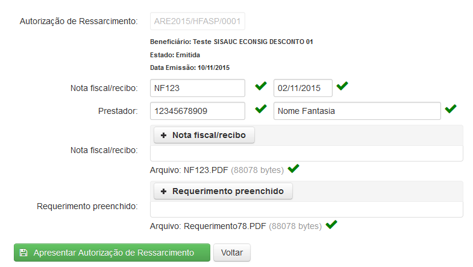
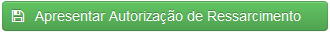

Clicando em 'Apresentar ARE' surgirá uma tela com a lista das ARE para serem apresentadas.
É possível facilitar a busca utilizando os filtros ARE Código e Beneficiário, bastando apenas clicar e digitar a palavra a ser buscada.

Tela 'Apresentação da ARE'
O botão ( ) permite visualizar os detalhes da ARE para apresentação.
) permite visualizar os detalhes da ARE para apresentação.

Tela 'Apresentar Autorização de Ressarcimento'

O ícone () indica que o campo foi preenchido corretamente.
Se todos os campos forem preenchidos corretamente o botão () será habilitado